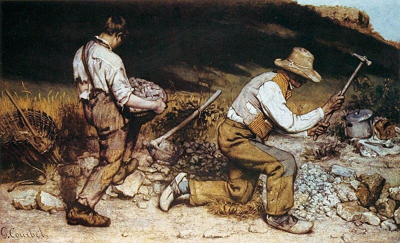

¿Problemas con R? ¡Estamos aquí para ayudarte!
¡Únete a nuestros domingos de preguntas y respuestas!

{kind=link}
¿Cómo participar?
- ¿Cuándo? Todos los domingos, de 6:00 p.m. a 7:00 p.m. (hora de Costa Rica UTC-6)
- ¿Dónde? Sesiones en vivo a través de Zoom.
Normas de conducta
Respeto: No serán permitidos comportamientos que excluyan o intimiden a otros. Prohibidos los comentarios ofensivos, la intimidación, las amenazas y el uso de imágenes violentas o sexuales (Leer Código de conducta).
Participación activa: Anímate a participar, hacer preguntas y contribuir al diálogo. Las preguntas que parecen simples para uno pueden ser una gran duda para otro.
Silencio durante la sesión: Mantén tu micrófono silenciado a menos que estés hablando.
Privacidad: No se grabarán las sesiones para proteger la privacidad de todos los participantes.
Puntualidad: Sé puntual para respetar el tiempo de todos.
No bots 🤖: Las sesiones son exclusivamente para humanos.
Privacidad y Protección de Datos: La información personal recolectada, como nombres y correos electrónicos de los participantes en el formulario de inscripción, será utilizada exclusivamente para enviar el enlace de Zoom del evento y un recordatorio 6 horas antes del mismo. Nos comprometemos a respetar la privacidad de cada participante y a manejar sus datos personales en conformidad con la Ley de Protección de la Persona frente al Tratamiento de sus Datos Personales (Ley Nº 8968) de la República de Costa Rica. (Leer más)